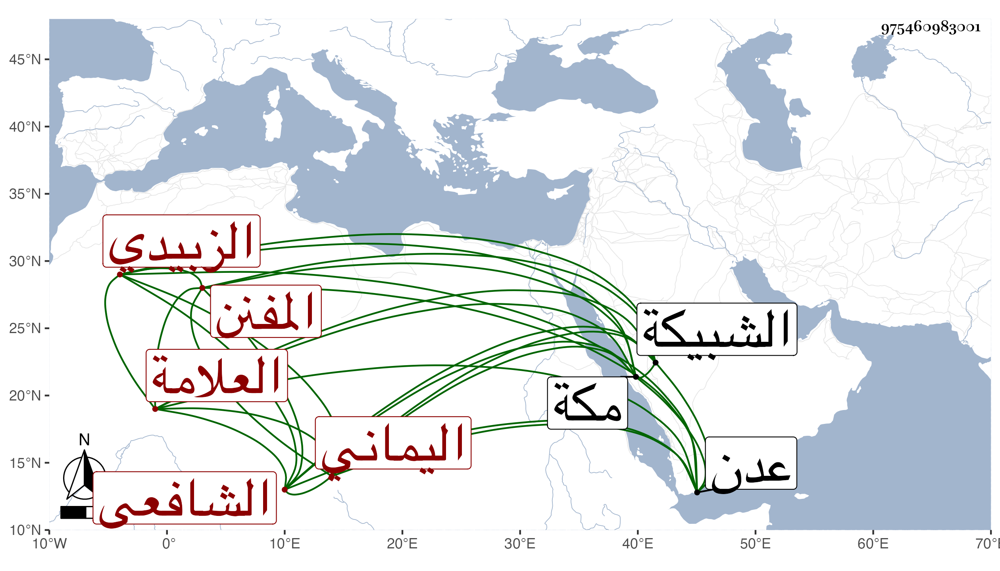

0902Sakhawi.DawLamic.ITO20230111-ara1.EIS1600.975460983001
Biography ID: 975460983001
443
أبو القسم بن علي بن محمد بن علي بن زبيدة العلامة المفنن الشرف الزبيدي اليماني الشافعي المعروف بالشرف زبيدة قرأ على فقهاء بلده ومهر في الفنون فقها ونحوا ولغة وصرفا وكان ذكيا فطنا غواصا على المعاني الدقيقة درس وأفتى ونظم الشعر وعلق التعاليق المفيدة وأثنى عليه علماء وقته بجودة الذهن وفرط الذكاء ومع ذلك فكان ناقص الحظ ولما انتهت الدولة الرسولية ضاق حاله وانتقل إلى عدن وغيرها ثم حج وأقام بمكة ينسخ بالأجرة وأقبل عليه الخواجا الشهاب قاوان فأحسن إليه بحيث استقام حاله قليلا واستمر إلى أن مات في يوم الخميس تاسع عشري ذي الحجة سنة ثمان وخمسين ودفن بالشبيكة ذكره ابن فهد وقال ابن عزم أنه قرأ عليه الشفا .
